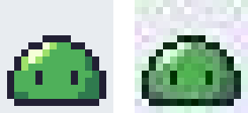

3. 道具を準備する
ドット絵は、ピクセル単位で色を置けるソフトウェアであれば何でも描ける。ただし、ドット絵に向いた機能を持つ専用のエディタを使うと、作業がずっと楽になる。この章では、エディタの選び方と設定、保存形式について説明する。
3.1. エディタに求める機能
ドット絵のエディタには、次の機能があるとよい。
3.2. エディタの選択肢
代表的なエディタを次の表に示す。いずれも上の機能の多くを備えている。
名前 |
費用 |
特徴 |
|---|---|---|
Aseprite |
有料 |
ドット絵とアニメーションの制作に特化したエディタ。機能が充実しており、利用者も多い。ソースコードが公開されており、自分でビルドすれば個人利用に限り無料で使える。 |
LibreSprite |
無料 |
Aseprite の古い版から派生したエディタ。最新の Aseprite より機能は少ないが、基本的な機能はそろっている。 |
Piskel |
無料 |
ウェブブラウザ上で動作するエディタ。インストール不要で、すぐに試せる。 |
GIMP |
無料 |
汎用の画像編集ソフト。鉛筆ツールを使えばドット絵も描けるが、アニメーションの機能は弱い。 |
Pyxel エディタ |
無料 |
Python 向けのレトロゲームエンジン Pyxel に付属するエディタ。画像、タイルマップ、効果音、音楽を編集できる。 |
これからドット絵を続けていくつもりなら、Aseprite が第一の候補になる。まず無料で試したい場合は Piskel か LibreSprite がよい。Python でゲームを作るつもりなら、Pyxel エディタも選択肢になる。各エディタの入手先は参考文献に示した。
本書の内容は特定のエディタに依存しない。以降の章では、どのエディタにもある基本的な機能だけを使う。
3.3. Pyxel エディタを使う場合
Pyxel が導入済みであれば、追加のインストールなしで Pyxel エディタを使える。次のコマンドを実行すると、リソースファイル my_resource.pyxres を編集する画面が開く。ファイルが無い場合は新しく作成される。
1pyxel edit my_resource.pyxres
Pyxel エディタには次の特徴がある。
画像は 256×256 ピクセルのイメージバンク（3 枚）に描く。キャラクターやタイルは、イメージバンクの一部を切り出して使う。
色は既定で 16 色のパレットから選ぶ。リソースファイルと同じ名前の
.pyxpalファイル（1 行に 1 色をRRGGBB形式の 16 進数で書いたテキストファイル）を置くと、そのパレットで編集できる。PNG などの画像ファイルを画像エディタの画面にドラッグ＆ドロップすると、イメージバンクに読み込める。このとき、各ピクセルの色はパレットの中で最も近い色に置き換わる。
Ctrl+Sで保存し、Ctrl+Zで元に戻す。
図 3.1 Pyxel の既定のパレット（16 色）
色数が 16 色に限られるのは不便に思えるかもしれないが、第 5 章で説明するように、色数の制限はドット絵ではむしろ利点になる。描いた画像を Python のプログラムから使う方法は、第 9 章で説明する。
3.4. エディタの設定
どのエディタを使う場合も、描き始める前に次の設定をしておく。
キャンバスの大きさを決める：最初は 16×16 ピクセルにする。
グリッドを表示する：1 ピクセルごとの格子に加えて、タイルを描くときは 16 ピクセルごとの格子も表示する。
鉛筆ツールを選ぶ：ブラシの大きさは 1 ピクセルにし、アンチエイリアスやぼかしの設定は無効にする。
等倍のプレビューを表示する：拡大した画面だけを見て描くと、実際の大きさで見たときの印象とずれる。描きながら、こまめに等倍の表示を確認する。
拡大した画面では細部がよく見えるため、つい描き込みすぎてしまう。等倍で見て伝わらない描き込みは、ノイズにしかならない。
3.5. 保存形式
ドット絵は PNG 形式で保存する。PNG は可逆圧縮の形式で、保存しても色が変わらず、透明も扱える。
写真でよく使われる JPEG 形式は、ドット絵の保存には使ってはいけない。JPEG は人の目に目立ちにくい情報を捨ててデータを小さくする非可逆圧縮の形式で、色の境界に圧縮ノイズが出る。

図 3.2 保存形式による違い（8 倍）。左は PNG、右は JPEG（品質 75）。
図 3.2 の右の図では、輪郭の周りに本来無い色がにじんでいる。実際に色の数を数えると、PNG で保存した画像は背景を含めて 6 色のままだったが、JPEG で保存した画像は 200 色以上に増えていた。一度 JPEG で保存した画像を元に戻すことはできない。
アニメーションを手軽に共有するには GIF 形式が便利である。ただし GIF は 1 枚の画像で 256 色までしか使えず、半透明も扱えない。編集の途中のデータは、レイヤーやフレームの情報を残すため、エディタ固有の形式（Aseprite の .aseprite 形式など）で保存しておき、使うときに PNG や GIF に書き出す。